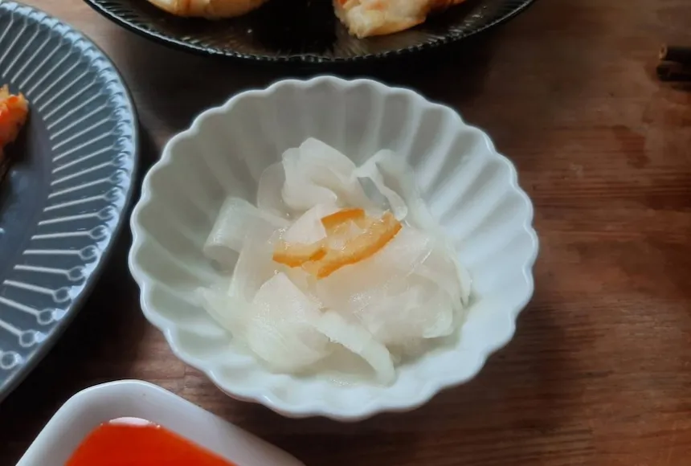
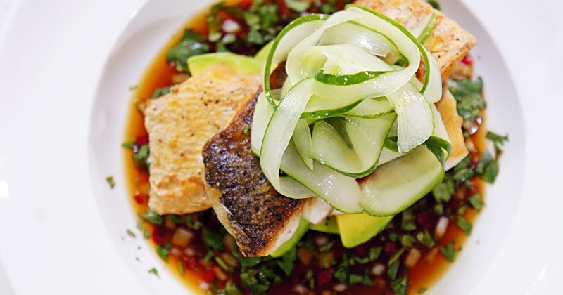
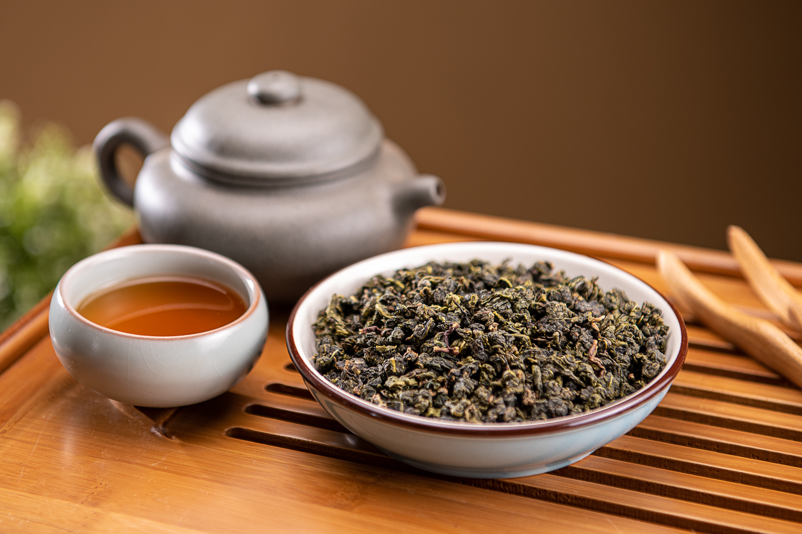

柚香大根漬冷盤
將白蘿蔔薄切冰鎮，漬入日本高知縣柚子汁與微甜蜂蜜。口感爽脆酸甜，是夏日最舒心的開胃序曲。

日式柴魚昆布冷麵
北海道昆布與厚切鰹節低溫一夜漬出的澄澈高湯，搭配彈牙蕎麥麵與現磨山葵，微涼辛香，優雅消暑。

低溫慢煮鱸魚佐黃瓜薄片
選用鮮活鱸魚菲力，以時令香草低溫慢煮保留細緻肉汁，表面鋪上薄如蟬翼的清脆小黃瓜，風味清爽無負擔。

黑糖焙茶刨冰佐冷萃青茶
極細緻的雪花冰淋上沖繩黑糖蜜與濃郁焙茶醬，附上一杯經 12 小時慢速冷萃的高山青茶，透心涼而不甜膩。